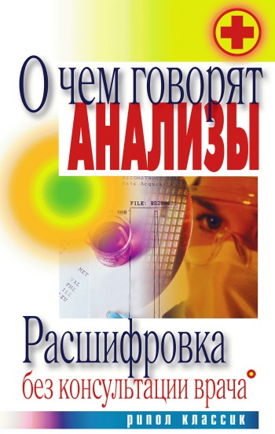
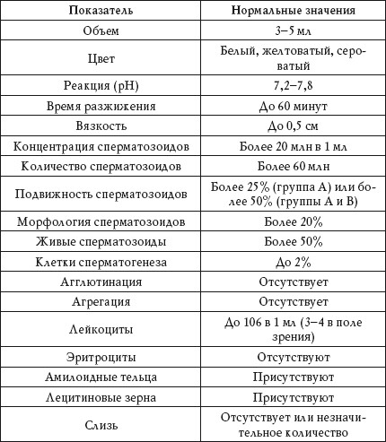

Спермограмма – это исследование эякулята, развернутый анализ спермы, позволяющий оценить способность мужчины к зачатию ребенка, а также выявить некоторые заболевания половой сферы.
Подготовка к анализу
Основной метод получения спермы для анализа – мастурбация.
Перед сдачей спермы на анализ в течение 2 суток следует воздержаться от семяизвержения.
Мужчине необходимо сдать на анализ весь эякулят, выделившейся при семяизвержении.
Не рекомендуется сдавать на анализ сперму, полученную в результате прерванного полового акта, орального секса и полового акта в латексном презервативе.
Все это приведет к искажению результатов исследования.
Расшифровка анализа
Нормальные показатели спермограммы представлены в таблице 76.
Таблица 76
Анализ спермы. Нормальные показатели

Объем
Пониженный показатель
Уменьшение объема эякулята наблюдается при недостаточной функции половых желез, что может являться следствием понижения уровня мужских половых гормонов в крови.
Повышенный показатель
Увеличение объема эякулята наблюдается при:
• везикулите;
• простатите.
Цвет
Красноватый или буроватый
Красноватый или буроватый цвет эякулята наблюдается при:
• травмах половых органов;
• хроническом везикулите;
• калькулезной форме простатита.
Желтый
Желтый цвет эякулята наблюдается при приеме некоторых лекарственных препаратов и поэтому диагностического значения не имеет.
Реакция
Повышенный или пониженный показатель
Повышенный или пониженный показатель pH наблюдается при:
• везикулите;
• простатите.
Время разжижения
Повышенный показатель
Повышение времени разжижения эякулята наблюдается при:
• хроническом простатите;
• хроническом везикулите;
• дефиците в организме ферментов.
Вязкость
Этот показатель определяют по длине нити, которую образует эякулят, стекая со специальной иглы или с пипетки.
Повышенный показатель
Повышенная вязкость эякулята наблюдается при:
• хроническом простатите;
• хроническом везикулите.
Повышенный показатель времени разжижения и вязкости спермы говорит о том, что сперматозоиды дольше набирают полноценную подвижность, что приводит к их более длительному контакту с кислой средой влагалища и, как следствие, снижает шансы проникновения в матку.
Концентрация и количество сперматозоидов
Пониженный показатель
Понижение концентрации сперматозоидов (олигозооспермия), а также их количества наблюдается при:
• снижении уровня мужских половых гормонов в крови;
• воспалительном процессе в яичках;
• перенесенном воспалительном или токсическом поражении сперматогенного эпителия яичек;
• ослаблении иммунной системы;
• нарушении обмена веществ.
Подвижность сперматозоидов
Этот показатель напрямую влияет на вероятность зачатия естественным путем. В зависимости от подвижности сперматозоиды делятся на 4 группы:
• группа А – активноподвижные с прямолинейным движением;
• группа В – малоподвижные с прямолинейным движением;
• группа С – малоподвижные с вращательным или колебательным движением;
• группа D – неподвижные.
Пониженный показатель
Понижение подвижности сперматозоидов – астенозооспермия – наблюдается при:
• воспалительных заболеваниях половых желез;
•токсических и тепловых воздействиях на яички;
• уреаплазмозе.
Морфология сперматозоидов
Данный показатель отражает процент сперматозоидов, способных к оплодотворению.
Пониженный показатель
Понижение количества способных к оплодотворению сперматозоидов – тератозооспермия – наблюдается при:
• радиационных и токсических поражениях половых органов;
• воспалительных заболеваниях половых органов;
• перенесенных инфекционных заболеваниях половых органов;
• плохой экологической обстановке.
Живые сперматозоиды
Пониженный показатель
Понижение количества живых сперматозоидов в эякуляте – некроспермия – наблюдается при:
• радиационных, тепловых и токсических поражениях половых органов;
• воспалительных заболеваниях половых органов;
• перенесенных инфекционных заболеваниях половых органов.
Для профилактики бесплодия необходимо своевременно лечить воспалительные заболевания половых органов.
Клетки сперматогенеза
Это слущенные клетки эпителия семенных канальцев яичек.
Повышенный показатель
Повышение количества клеток сперматогенеза наблюдается при:
• воспалении ткани яичек;
• инфекционном поражении ткани яичек;
• радиационных, тепловых и токсических поражениях половых органов.
Агглютинация
Это склеивание сперматозоидов друг с другом.
Положительный результат
Появление агглютинации наблюдается при:
• ослаблении иммунной системы;
• аутоиммунных воспалительных процессах;
• хроническом воспалении половых органов.
Появление агглютинации и агрегации, как правило, приводит к снижению подвижности сперматозоидов.
Агрегация
Это скопление сперматозоидов в большие сгустки.
Положительный результат
Появление агрегации наблюдается при хроническом воспалении половых желез.
Лейкоциты
Повышенный показатель
Повышение количества лейкоцитов наблюдается при остром или хроническом воспалительном процессе в половых органах.
Эритроциты
Положительный результат
Появление эритроцитов в эякуляте наблюдается при:
• травмах половых органов;
• опухолевых заболеваниях половых органов;
• камнях в предстательной железе;
• хроническом простатите;
• хроническом везикулите.
Амилоидные тельца и лецитиновые зерна
Отрицательный результат
Отсутствие амилоидных телец и (или) лецитиновых зерен в эякуляте наблюдается при снижении функции предстательной железы, что, как правило, происходит при ее хроническом воспалении.
Слизь
Повышенный показатель
Наличие большого количества слизи в эякуляте наблюдается при воспалительном процессе в половых органах.
MAR-тест, IgG
Этот тест выполняется одновременно со спермограммой. Согласно требованиям ВОЗ, отдельно он не проводится. Анализ позволяет определить наличие (отсутствие) антиспермальных антител класса G на поверхности сперматозоидов.
Образование антиспермальной оболочки на поверхности сперматозоида приводит к им мунологическому бесплодию. К антиспермальным антителам относятся иммуноглобулины типов IgG, IgA и IgM, которые образуются у мужчин в яичках, их придатках, а также в семявыводящих протоках. Данные антитела действуют против антигенов мембраны разных частей сперматозоида.
В спермограмме сперматозоиды, покрытые антиспермальными антителами, расцениваются как нормальные. На самом же деле они не участвуют в оплодотворении.
С помощью MAR-теста определяют количество таких антител, а также процент покрытых антиспермальными антителами нормальных сперматозоидов к общему количеству сперматозоидов. Критерием положительного MAR-теста является превышение 50%-ного порога.
Положительный MAR-тест указывает на большую вероятность иммунологического бесплодия у мужчин.